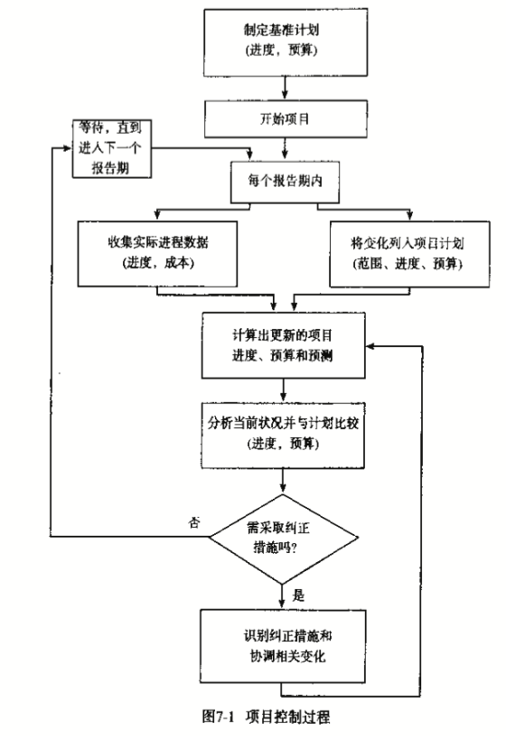

项目生命周期：
- 确认需求或问题
- 提出解决方案
- 执行解决方案
- 结束项目
简单地说，项目管理过程就是制定计划，然后按计划工作
项目管理关键的成功因素：
- 计划和沟通对于成功的项目管理是必要的。它们能防止问题产生，或者在问题产生时使问题对实现项目目标的影响最小化。
- 项目开始以前花时间建立一个考虑周全的计划，对于任何项目的成功都是必要的。
- 一个项目必须有一个明确界定的目标——一个期望的结果或产品，根据工作范围、进度计划、成本以及客户满意来定义。
- 把客户作为一个合作伙伴，通过客户在项目整个过程中的积极参与来获得成功。
- 要使客户满意，就要同客户随时沟通，使客户知晓进度情况，以便决定是否需要改变期望。
- 有效控制项目的关键在于，及时、定期监测实际进程，并与计划进程相比较。如有必要，则立即采取纠正措施。
- 项目结束以后，应该评估一下项目绩效。如果未来执行一个相似项目的话，则可知晓能够改进哪些方面。应该从客户和项目团队处得到反馈。
识别需求是项目生命周期的最初阶段。它开始于需求，问题或机会的识别，结束于需求建议书（request for proposal,RFP）的发布。客户识别需求、问题或机会，是为了更好地开展业务，并因此能看到执行一个有可能使现状得以改善和提高的项目对自己的益处。
评估机会：
- 与公司目标的一致性
- 预期销量
- 市场份额的增长
- 新市场的建立
- 预期零售价格
- 需要的投资额
- 预计单位制造成本
- 技术发展的需要
- 投资回报
- 人力资源的影响
- 公众反应
- 竞争对手的反应
- 预期的时间进程
- 管制审批
有时，机会和需求并不是一回事，就好像一些备选的新产品，它们可能差别很大，争相使用公司的资源。
需求建议书的一些指导方针
- 1）需求建议书必须提供工作陈述（statement of work,SOW）
- 2）需求建议书中必须包含客户要求（customer requirements），定义好规格和属性
- 3）需求建议书中应当说明客户期望承约商或项目团队提供什么样的交付物
- 4）需求建议书中应当列明任何应由客户提供的物品
- 5）需求建议书中可能要说明需客户审批的内容
- 6）某些需求建议书会提到客户想使用的合同类型
- 7）需求建议书可能会表明客户想用的付款方式
- 8）需求建议书应当表明项目完成所要求的进度计划
- 9）需求建议书应当指导并说明承约商申请书的格式和内容
- 10）需求建议书应当指出客户希望潜在承约商提交申请书的最后期限
- 11）需求建议书可能会包括评价标准
- 承约商从事类似项目的经验
- 承约商提出的技术方法
- 进度计划成本
- 12）需求建议书中很少透露客户愿为此项目拨付多少资金
需求建议书的关键成本因素：
- 在准备需求建议书前必须清楚地定义需求
- 当从众多需求或机会中选择一个项目时，要通过比较项目成本和可能的结果，选出能提供最大收益的项目
- 有一个考虑周详的评估和选择程序，一个全面的评估委员会，将会增加做出最好的项目决策的机会。
- 一个好的需求建议书将使承约商和项目团队充分理解客户的期望，这样他们就能准备一个全面的申请书来满足客户的需求。
- 需求建议书应包括工作陈述、客户需求、期望的交付物和客户评估申请书的标准。
- 客户不能故意向某些承约商提供额外的信息，因为那样将造成这些承约商在准备计划书的时候具有不公平的竞争优势。
承约商在是否投标决策过程中要考虑的因素：
- 1）竞争：优势、劣势
- 2）风险：失败风险？
- 3）任务：目标一到处？
- 4）能力的扩展：会给承约商提供扩展和强化其能力的机会吗？
- 5）声誉：是否曾成功地为类似的客户做过项目？满意？失败过？
- 6）客户资金：客户是否真的能够提供资金？还是只是调查？
- 7）申请书所需资源：是否有资源准备高质量的申请书（低质量的申请书可能给客户留下不好的印象）
- 8）项目所需资源：如果中标，能得到合适的资源吗？
在申请书中承约商必须使客户确信：
- 理解客户的要求
- 能执行申请的项目
- 能向客户提供最大的价值
- 是解决问题的最佳承约商
- 将利用以前相关项目的成功经验
- 将非常专业地工作
- 将获得预期的成果
- 将在预算内按进度完成项目
- 能使客户满意
申请书三个部分：
- 技术：承约商理解和客户的需求或问题，并且能够提供风险最低且收益最大的解决方案
- 1）理解问题：用自己的话来阐述他对客户的问题或需求的理解
- 2）提出方法或解决方案：描述承约商如何收集、分析和评价有关问题的数据和信息；承约商用来评估几个备选方案或进一步提出解决方案的方法；提出方案或方法的基本原理；确认提出的方法或解决方案能够满足客户在有需求建议书中所陈述 的各种物理的、操作性的或性能方面的要求
- 3）客户的收益：应当表明所提方案或方法如何能使客户受益
- 管理：
- 1）工作任务描述：承约商应当界定为完成项目而要执行的主要任务，并且提供每个主要任务所包括内容的简要描述
- 2）交付物：承约商应当提交一份交付物清单（有形的产品及物品）
- 3）项目进度计划：承约商应当提供完成项目所以要执行的主要的任务的进度计划
- 4）项目组织：应当描述如何组织工作和资源，以便执行项目
- 5）相关经验：提供一份曾执行过的类似项目的清单
- 6）设备和工具
- 成本：使客户确信，承约商就申请项目所提出的价格是切合实际的、合情合理的
- 1）劳动力：预计在项目中工作的各级人员的劳务成本的估算，可能包括针对每个人或每个等级进行估算的小时数和小时工资率
- 2）原材料：承约商需要为执行项目而购买的原材料的成本
- 3）分包商和顾问
- 4）设备和设施租金
- 5）差旅费
- 6）文档
- 7）一般管理费：经营的间接成本，如保险、折旧、会计成本、总管理成本、市场营销成本、人力资源成本等
- 8）物价上涨
- 9）意外开支准备：管理储备金
- 10）奖金或利润
承约商在决定申请项目的定价时，必须考虑：
- 1）成本预算的可信度：成本估算得越详细越好
- 2）风险：意外开支准备金或管理储备金、基金
- 3）项目对承约商的重要性
- 4）客户预算：知道客户已经为此项目做了预算的承约商，就不应该提出超过客户预算的价格
- 5）竞争
客户用来评估承约商申请书的一些标准：
- 遵从客户在需求建议书中提出的要求和工作表达
- 承约商对客户的问题与需求的理解
- 承约商提出的解决问题的方法的合理性与可行性
- 承约商具有类似项目的经验与成功经历
- 负责项目工作的主要人员的经验
- 管理能力，包括承约商计划和控制项目，以确保工作范围在预算内按时完成的能力
- 承约商进度计划是否切合实际
- 价格。客户关心的是承约商所提出价格的合理性、现实性与完善性
项目合同的一些重要条款：
- 1）谎报成本
- 2）成本超支或进度计划延迟的明示
- 3）分包商审批
- 4）客户提供的设备或信息
- 5）专利
- 6）专有信息的透露
- 7）国际化考虑
- 8）终止理由
- 9）付款方式
- 10）奖金/罚款
- 11）变更
提出解决方案关键的成功因素：
- 需求建议书/申请书前的努力对于建立最终从客户处赢得合同的基础很重要
- 不应当等到客户发出正式的需求建议书才开始制定申请书，而要在潜在的客户准备提出需求建议书之前就与潜在客户联系
- 与潜在客户建立紧密的联系，能使承约商在竞标过程中牌比较有利的位置。在需求建议书/申请书前的活动期间，承约商应尽可能多地了解客户的需求、问题以及决策过程
- 熟知客户的需求，要求和期望有助于准备一份重点突出的申请书
- 要实事求是地评价企业准备一份高质量的申请书的能力以及赢得合同的可能性。仅仅准备一份申请书是不够的，而且，申请书必须具备过硬的质量才能赢得合同
- 申请书是一份推销文件，它并不是技术报告，应该以简明扼要的方式写出，运用客户熟知的术语
- 在申请书中强调不同于竞争者的独特因素是很重要的
- 申请书必须实事求是，允诺过多或者过于乐观，则难以令人信服，使客户怀疑承约商是否真的理解应该做什么和怎么做
- 当投标于一个固定价格的项目时，承约商必须建立精确的、完善的成本预算，并把所有的应急成本都计算在内
在做出执行纠正措施的决定之前，应评估一下几套备选行动方案，以确保纠正措施使项目回到项目的工作范围、时间和预算约束内。要注意，增加资源以捡回时间和返回进度的举措可能会导致实际成本超出预算成本。如果项目已无法控制，想在不牺牲工作范围、预算、进度计划或质量的情况下实现项目目标，那将是很难实现的。
有效的项目控制的关键是定期、及时地测量实际进程，并与计划进程相比较，如有必要，立即采取纠正措施。
项目后评估团队会议主题：
- 技术绩效
- 成本绩效
- 进度绩效
- 项目计划与控制
- 客户关系
- 团队关系
- 交流
- 识别问题和解决问题
- 建议
项目关键的成功因素：
- 项目开始以前制定一个计划是很重要的。投入相当时间制定一个考虑周详的计划对于项目的成功完成是很有必要的。
- 参与者承担相应的责任。项目的执行人必须参与项目计划的制定工作。
- 应该安排经常性地与客户面对面的交流。
- 经常性地询问客户对于项目进度的满意度。
- 及时向客户和项目团队通告项目进展情况和潜在的问题。
- 有效项目控制的关键是及时地对比实际进度并同计划，如果需要，则立即采取纠正措施。
- 项目完成后，应该评估项目绩效，以便学习如果未来执行一个相似项目，有哪些是应该改进的。应该从客户和项目团队那里得到反馈。
计划是为完成一个目标而进行的系统的任务安排。计划确定需要完成什么和怎样才能完成。计划是与实际进度进行比较的基准；如果发生了偏差，可采取纠正措施。让实际负责工作的人参与制定工作计划，这一点是很重要的。他们通常最了解需要开展哪些具体活动和每项活动需要多长时间。
对于一个项目，目标通常用工作范围、进度计划和成本来表示——它要求在一定期限和预算内完成这项工作。
工作分解结构将一个项目分解成易于管理的几个部分或几个细目，有助于识别完成项目工作范围所需的所有工作要素。它是项目团队在项目期间要完成或生产出的最终细目的等级树。所有这些细目的完成或产出构成了整个项目工作范围。
决定工作分解结构详细程序和等级多少的原则是：
- 1）为完成工作包而分配给每个组织或个人的职责
- 2）你想在项目期间控制预算、监控和收集成本数据的水平
对于每项活动应该考虑：
- 1）就在该活动可以开始之前，哪些活动必须完成？
- 2）哪些活动可以与该活动同时进行？
- 3）哪些活动只有在该活动完成后才能开始？
在决定一个项目网络图应有的详细程序时，应考虑：
- 1）如果已经有了项目的工作分解结构，那么，必须明确每个工作包的活动
- 2）先绘制一个概括性的网络，再把它扩展成更为详细的网络图
- 3）详细程度可以由某些明显的分界面或转折点确定：
- 如果责任发生了变化，即由不同的人或组织接替此项工作，就应确定一项活动的结束和其他活动的开始
- 如果一项活动的结果是一个有形的、可交付的产出或付太苛刻，那就必须界定一项活动的结束和其他活动的开始。
- 4）活动的估计工期不能比检查实际项目进度和将之与计划进度进行比较的时间间隔长。
计划的关键的成功因素：
- 在项目开始以前制定一个计划是很重要的。投入相当的时间制定一个经过深思熟虑的计划，对于任何项目的成功完成都是必要的。
- 参与能建立起承诺，通过对计划工作的参与，个人能够建立起完成项目的承诺。
- 项目的目标必须明确、可行、具体、可度量，并且在客户和执行项目的组织之间达成一致。
进度安排关键的成功要素：
- 执行活动的负责人应该为这个活动制定出工期估计，并使人们就这个工期估计达成共识
- 活动的工期估计必须以活动中期望用到的资源数量为基础
- 活动的工期估计应该是积极而可靠的
- 实际过程中存在着用于回顾并同计划过程进行比较的时间间隙，工期估计不应长于这个时间间隙
项目管制过程

当分析有负时差的活动路径时，应将精力集中在以下两种活动上：
- 1）近期内的活动（即正在进行或随后将开始的活动）。减少活动工期的一种明知做法是，对即将到来期间内的活动采取积极的纠正措施，而不是打算对将来期间内的活动采取纠正措施。
- 2）工期估计长的活动。减少一项具有20天工期的活动20%的时间，会比完全除去一项只有1天工期的活动的纠正措施有更大的影响。工期较长的活动缩减的可能较大
进度控制关键的成功要素：
- 项目管理包括一些前期控制活动，以确保项目目标即使在事情没有与计划相符时也可以完成
- 项目开始后，通过检测实际过程来确保每件事情与计划相符是很重要的
- 提高项目控制的关键是检测实际过程，按时间与进度计划进行比较，必要时采取纠正措施
- 提高时间管理的关键是，在辨认每条关键路径时，对每条路径一经确认，就标出负的或破坏性的时差。如果要加快项目进程，就必须应用这一方法。负时差的数量将破坏应用这种努力的优先级。
- 当试图减少带有负时差的活动路径的时间跨度时，关注那些和整个期间关系密切的和估计工期较长的活动
- 及早确定计划进度的问题将使消极的成本和范围影响降到最低。如果项目洪兵于计划进度太多，使它重新跟上计划变得非常困难，并且，经常需要花费更多的钱、缩减范围或降低质量
- 如果修正的行动是必需的，那么必须做出关于相应付出的时间、成本和范围的决定
- 时间-成本平衡法是用最少的相关成本来减少项目的增加期限
- 为了对实际进程和计划进程进行比较，应该设立一个定期的报告期
- 报告期趣短，迟早发现问题并采取纠正措施的可能性越大
- 在每个报告期中，实际绩效的数据和项目的范围、计划进度和预算的变动情况信息需要及时地搜集，并且应用这些信息来计算更新的时间表和预算
资源平衡或均衡方法：这是一种反复试验 法，即为了保持资源需求均衡水平而推迟那些非关键活动（即时差为正值）的最早形式时间，但只能推迟到所有时差为正值的活动不下载在正时差为止，否则会使项目超过预定完工日期。资源平衡是在不延长项目要求完工时间的情况下建立资源均衡利用的进度计划。
资源约束进度安排方法：在各种可得资源的数量不变的情况下制定最短进度计划的一种方法。它是在最小时差的原则下反复地将资源分配到各个活动中去的一种方法。在几个活动同时需要同一有限资源的情况下，拥有最小时差的活动将拥有资源配置的优先权。如果资源还有闲置，再优先分配给时差最小的活动。
资源配置关键的成功要素：
- 由于进行项目活动所需的大量各种类型的资源可能是有限的，所以资源的有限性会阻碍项目工期的完成
- 如果在计划中考虑资源的话，就必须为每个活动所需资源的数量和种类进行估计
- 如果资源不充足，那么一些活动就不得不被重新安排在所需的淘汰可以获得的时间里
- 资源的平衡和均衡是开发一个试图使资源需求波动最小计划的方法，使得在不超过所需的完成时间的情况下，尽可能地平均地使用资源
- 有限资源计划是在资源数量固定的情况下，开发最短期计划的方法。如果必须保证在资源限制内，那么将会延长项目的完成时间。
项目预算过程包括两个步骤：
- 1）将项目成本估计分摊到项目工作分解结构中的各个工作包
- 2）将每个工作包的预算分摊到整个工作包的工期内，这才有可能知道在任何时点预算应当支出多少
成本计划和绩效关键的成功要素：
- 成本计划开始于项目的建议阶段，在这一时点，项目成本就应被估计出来
- 让从事与成本相关的工作人员制定成本估计。这样做，可以得到普遍的认同
- 成本估计应是切合实际的，并且也应是进取的
- 一旦项目开始，就要监督实际成本和绩效，以确保每件事都在预算范围之内
- 在经常及时的基础上，建立搜集实际成本花费和允许成本花费，以及工作效率的盈余量（完工比率）的数据的系统，这样，就能够用它们同累计预算成本相比较
- 在项目的任何时间，如果认定项目彻底超过预算或者绩效衡量的价值与实际成本的增长速度不同步，那么，就必须立即采取纠正措施
- 应该用累计预算成本（CBC）而不是总预算成本（TBC）作为累计实际成本（CAC）相比较的标准。由于分析成本绩效时总是在实际成本低于总预算成本，这时认为是良好的。所以这产生一个误导，来比较实际花费成本和总预算成本。
- 对累计实际成本与累计预算成本进行真实可信的比较，当进行相关的工作时，承付款项部分应被视为实际成本。
- 工作实际绩效的盈余量是在整个项目期间必须确定和报告的关键参数
- 在每个报告期内，完工比率的数据应从工作的负责人那里得到。重要的是在整个工作范围内对工作绩效做出公正的估计。
- 防止高估完工比率的方法是把工作包或活动以范围和时间分成小块。估计完工比率时，重要的不但是估计已经完成的工作，而且要估计什么工作没有完成。
- 提高成本控制效率的关键是经常及时地分析成本绩效，及早确认出成本差异（CV），以便在情况变得更糟糕前采取纠正措施。
- 分析成本绩效时，重要的是以相同的报告期为基础，尽可能搜集当前的数据。
- 仔细监督成本绩效比率的趋势，如果成本绩效比率小于1.0或逐渐毫米波，应采取纠正措施。
- 作为定期成本绩效分析的一部分，应计算出预测完工成本。
- 有效成本控制的关键是，一经发现负成本差异和无效率，就应当确定具体的工作包或活动，同时，在这些方面进行集中的努力，负成本差异的数量决定着这些努力的优先级。
- 当试图减少负成本差异时，关注那些将要完成的活动和那些有着巨大成本估计的活动。
- 越早确定成本问题，对范围和进度的影响越小。一旦成本失控，要回到预算之内将变得很困难，可能需要减少项目范围或推迟项目进度。
- 管理现金流的关键是保证现金的流入快于流出。
- 尽可能从顾客那得到付款（现金流入），尽可能推迟供应商和合作者的付款（现金流入）
有效的项目管理需要采取参与和顾问式的领导方式。项目经理以这种方式为项目团队提供导向和教练作用。
有效授权的障碍及如何克服：
- 项目经理想要新版完成这项任务，或者他认为自己会做得更好，完成得更快些。这种情况下，他一定要放弃这种想法，并相信其他人也能做好。要知道，其他人可以用不同于自己的方式进行工作。
- 项目经理不太信任其他人完成工作的能力。这时，要充分了解项目团队中每们成员的能力、潜力和不足，以便为每项任务挑选出最合适的成员。
- 项目经理害怕他会对工作失去控制，无法了解情况。为此，他应建立一个系统，定期监控和评审工作的进程。
- 团队成员害怕会因犯错误而受到指责，或者是缺乏自信心。这种情况下，项目经理要使每们成员知道他对他们的信任，并不时鼓励他们要懂得失败是成功之母，而不是指责的借口。

项目经理关键的成功要素：
- 成功的项目经理应确保全部工作已在预算范围内按时优质地完成，从而使客户满意。
- 项目经理应积极主动地计划、沟通，并领导项目团队完成项目目标。
- 项目经理应激励员工取得成功，并赢得客户的信赖。
- 与项目团队成员一起制定项目计划，项目经理可以确保计划更有确切切实意义，这样能使团队为完成目标做出更大的投入。
- 成功的项目经理应积极主动地去解决问题，而不是采取等待和观望的态度。
- 项目经理应该有一套管理信息系统来识别有意义的和劳而无功的工作。
- 优秀的项目经理具有坚强的领导能力，培养员工的能力，非凡的沟通技巧，良好的人际交往能力，处理压力和解决问题的能力以及管理时间的能力。
- 成功的项目管理需要采取参与和顾问式的领导方式，项目经理以这种方式为项目团队提供导向和教练作用。领导有方的项目经理从不教导人们怎样去做工作。
- 当项目经理向团队成员讨教意见和建议时，应对它们的付出表示肯定与认同。
- 项目经理可以运用认同或赞赏来鼓舞士气。成员希望他们对项目做出贡献而得到认可和奖赏。积极地强化对期望的行为具有激励作用，被认同或得到奖赏的行为就会重复发生。
- 优秀的项目经理不会自己独占风头，惹人注意，或将别人的成绩与功劳据为已有。
- 有才干的项目经理具有乐观态度，对自己和项目团队的每个成员都有较高的、现实的期望。
- 项目工作应该充满乐趣，项目经理应从工作中获得乐趣，也鼓励项目团队的成员获得同样的乐趣。项目经理应该用实际行动为项目团队树立一个良好的榜样。
- 一个优秀的项目经理鼓励成员进行创新，承担风险，做出决定，这是学习和发展的良机。他承认在学习和发展过程中犯错误是难免的，但他不会制造失败的恐惧。
- 优秀的项目经理花更多的时间听别人说而不是自己说。他们注意倾听客户所表达的要求以及团队成员的意见和关注所在。
- 项目经理的沟通应及时、真实和明确。
- 项目经理应及时沟通，不要害怕报复，并且要能接纳不同的意见。
- 当不可预知的情况导致项目产生动荡时，优秀的项目经理保持镇静而不会急躁。
- 为有效地利用时间，项目经理要自我约束，能够辨明先后主次并愿意授权。
- 项目经理要在项目工作开始时建立起对变化的文件记录和批准审核的工作程序。
有效的项目团队具有以下特点：
- 对项目目标的清晰理解
- 对每们成员角色和职责的明确期望
- 目标导向
- 高度的合作互助
- 高度信任
团队有效工作障碍：
- 目标不明确
- 角色和职责不明确
- 项目结构不健全
- 工作缺乏投入
- 缺乏沟通
- 领导不力
- 项目团队成员的流动
- 不良行为
冲突的七种来源：
- 工作内容
- 资源分配
- 进度计划
- 成本
- 先后次序
- 组织问题
- 个体差异
解决问题的九步骤方法：
- 1）对问题做出说明
- 2）找出问题的可能原因
- 3）收集数据，确定最有可能的原因
- 4）得出可能方案
- 5）评估可行方案
- 6）决定最佳方案
- 7）修订项目计划
- 8）实施方案
- 9）判断问题是否得以解决
项目团队关键的成功要素：
- 项目获得成功需要一个有效的项目团队。尽管需要计划以及项目经理的工作技能，但人员才是项目成功的关键。
- 仅把一组人员集合在一个项目中共同工作，并不能形成团队。要使这些成员发展成为一个有效协作的团队，既要项目经理付出努力，也需要团队成员的付出。
- 有效的项目团队的特点包括：对项目目标的清晰理解，对每位成员角色和职责的明确期望，目标导向 ，高度的合作互助以及高度信任。
- 项目团队的每位成员都要协助营造并培养一个积极有效的项目环境。
- 有效的团队成员对自己有高度期望。他们会做好计划、控制并相信他们各自的工作。
- 有效的团队成员拥有开放、坦诚而又及时的沟通。他们愿意交流信息、想法和感情。他们彼此间做出建设性的反馈。
- 有效的团队成员不仅限于完成自己分派的任务，他们也是彼此之间的力量与源泉。
- 作为团队建设工作的一部分，项目经理和项目团队要明白，在项目工作过程中，冲突必然发生，并就应对之策形成一致意见。
- 有效的项目团队解决冲突的方法是通过建设性、及时的反馈和积极地正视问题。冲突是无法压制的，相反，要以积极的态度对待它，把它当做成长和学习的机会。
- 处理恰当，冲突也有其有利的一面。它能将问题暴露出来，及早得到重视。它能引发讨论，澄清成员们的观念。它可以培养人们的创造性，更好地解决问题。
- 冲突不能完全靠项目经理来处理解决；团队成员之间的冲突应该由相关成员来处理。
- 每个人都必须以积极的态度对待冲突，并愿意就面临的冲突广泛交换情况。
- 为有效地管理时间，团队成员要明确每周目标，每天制定一个做事表。
项目沟通及文件记录关键的成功要素：
- 有效和经常的人员沟通对项目管理的成功至关重要。
- 在项目早期 ，高度的面对面沟通对促进团队建设、发展良好的工作关系和建立共同期望特别重要。
- 在人员沟通中，要注意反映文化差异的身体语言和习惯。
- 不要使用可能带有性别歧视、种族歧视、偏见或攻击性的评述、言辞或短语。
- 交流沟通的核心是理解——不仅需要被理解，而且还需要理解。使沟通有效的另一半是聆听。忽略聆听将会使沟通失败。
- 口头沟通应该诚实、清楚、不用术语，不带有攻击性。
- 使客户满意需要与客户保持沟通，应告诉客户以决定是否对预期内容进行变更。应随时询问客户对项目计划的满意度。
- 定期使客户和项目团队明晰项目情况及潜在问题。
- 项目情况评审会议应定期召开。项目开始时，在项目团队会议上宣布会议准则以使每个人都了解在项目会议期间哪些行为是希望发生的。
- 沟通项目进程时，要注意区分哪些对项目完成是有效的，哪些是劳而无功的。
- 报告要以局面嘎啊指出读者对什么感兴趣，而不是写报告的人对什么感兴趣。
- 报告应简明扼要。对报告的格式、组织形式、表象、可读性给予同内容一样的重视。
- 在报告早期，应就有关变更方式形成文件并获得认可的方式达成协议。
- 当文件已做了更改时，更新文件必须立即发送给其工作将受到更改影响的项目团队成员手中。

项目组织类型关键的成功要素：
- 在一个矩阵型组织中，使项目经理与职能经理明确各自职责是很重要的。
- 应用矩阵型组织结构，一定要制定工作纲领，保证在项目经理和职能经理之间恰当的权力平衡。